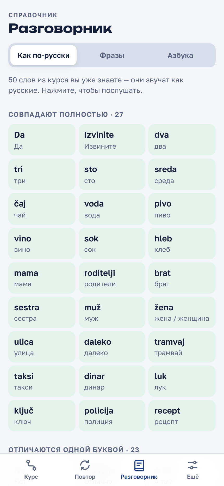

Сербский для русских
Сербский и русский — родственники. Вот слова, которые звучат одинаково.
Звучат точь-в-точь как по-русски · 1/2
Звучат точь-в-точь как по-русски · 2/2
А эти отличаются одной буквой
Но осторожно
Учите дальше

10 тем: от «Ćao» до врача и документов
Озвучка и упражнения 5 минут в день
Бесплатно, без регистрации
Ссылка в профиле